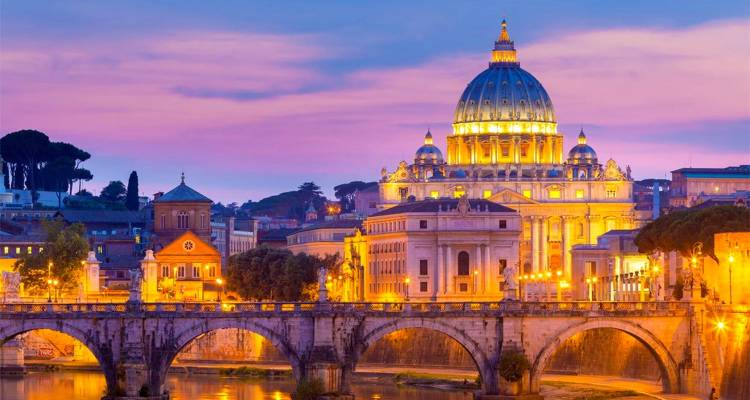

Real "tourism" only affected in Italy in the second half of the 17th century, with the beginning of the Grand Tour. This was a period in which European aristocrats, many of whom were British, visited parts of Europe; Italy, Greece and other Mediterranean places were amongst the most popular. This was in order to study ancient architecture and the local culture.[3] The Grand Tour was in essence triggered by the book Voyage to Italy, by Roman Catholic priest Richard Lassels, and published in 1670.[4][5] Due to the Grand Tour, tourism became even more prevalent - making Italy one of the most desired destinations for millions of people.[6] Once inside what would be modern-day Italy, these tourists would begin by visiting Turin for a short while. On the way there, Milan was also a popular stop, yet a trip to the city was not considered essential, and several passed by, or simply stayed for a short period of time. If a person came via boat, then they would remain a few days in Genoa. Yet, the main destination in Northern Italy was Venice, which was considered a vital stop,[4] as well as cities around it such as Verona, Vicenza and Padua. As the Tour went on, Tuscan cities were also very important itinerary stops. Florence was a major attraction, and other Tuscan towns, such as Siena, Pisa, Lucca and San Gimignano, were also considered important destinations. The most prominent stop in Central Italy, however, was Rome, a major centre for the arts and culture, as well as an essential city for a Grand Tourist.[4] Later, they would go down to the Bay of Naples,[4] and after their discovery in 1710, Pompeii and Herculaneum were popular too. Sicily was considered a significant part of the trail, and several, such as Goethe, visited the island.
| Destination | Cena |
|---|---|
| Italy Leto | 40.0EUR |
| Italy zima | 80.0EUR |
| Italy prolece | 44.0EUR |